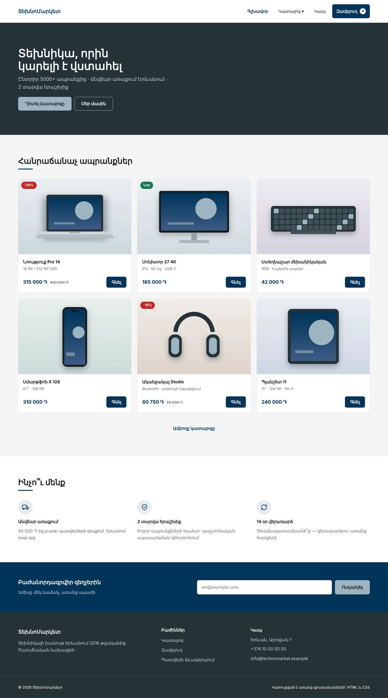
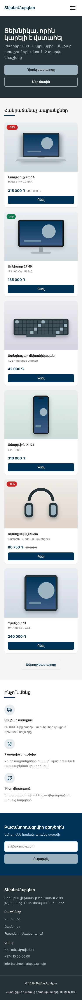
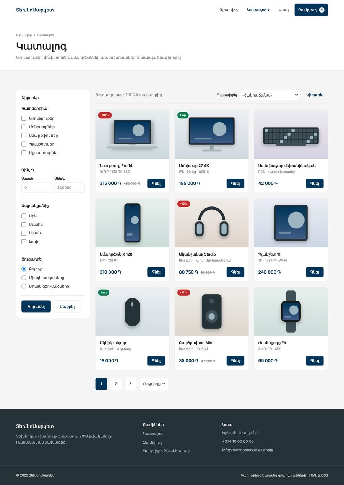
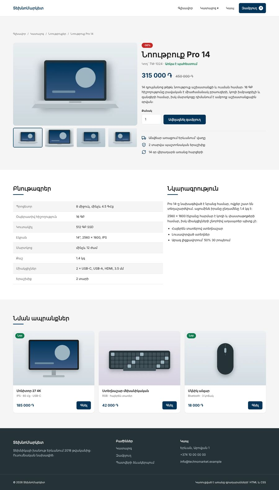
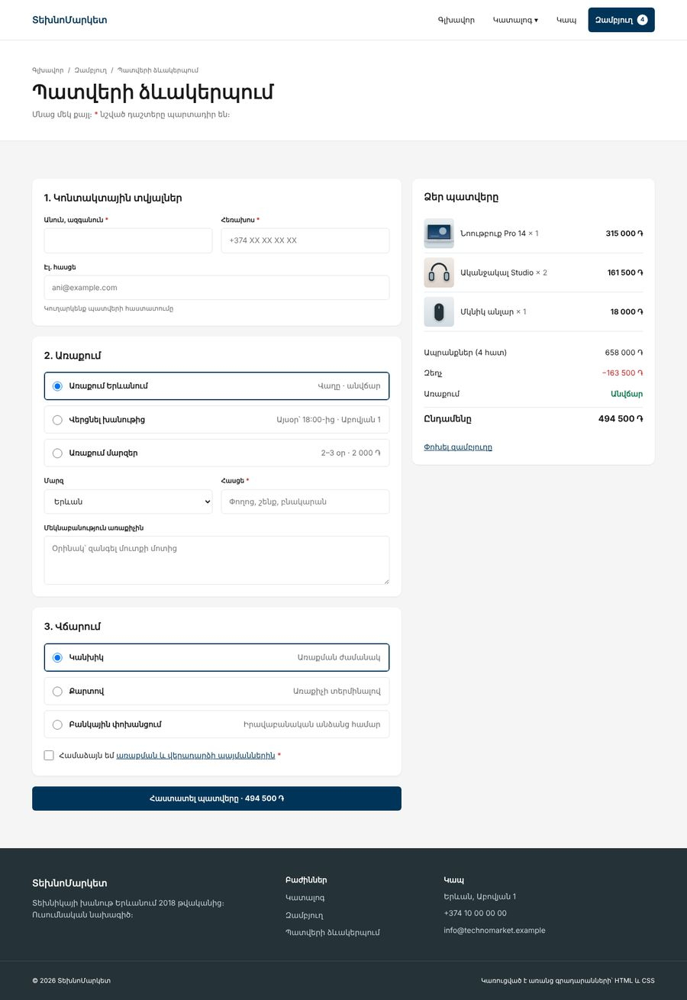

Բլոկ 1-ի նախագիծ · HTML Դաս 22–24
HTML/CSS բլոկի ամբողջ գիտելիքը մեկ կայքում․ սեմանտիկ կմախք, աղյուսակներ, ֆորմաներ, քո կառուցվածքային համակարգը, տոկեններ, կոմպոնենտներ, Grid, անիմացիաներ, ադապտիվություն և հրապարակում։ Նախագիծը բաժանված է երեք առաջադրանքի։ Ամեն առաջադրանքից հետո կա պատրաստի օրինակ՝ համեմատելու համար։ Նախագիծն օգտագործում է միայն 01–23 դասերում անցած թեմաները։
Օրինակը պատասխանների գիրք չէ, որ պատճենես։ Եթե բացես այն նախքան սկսելը, կսովորես կարդալ ուրիշի կոդը, ոչ գրել քոնը։
Աշխատիր այսպես․ 1. կատարիր առաջադրանքը ինքդ, 2. անցիր ստուգաթերթով, 3. միայն հետո բացիր օրինակը և համեմատիր․ ի՞նչն է այլ կերպ, և ինչու։ Քո լուծումը կարող է տարբերվել և լինել ճիշտ։ Տարբերությունները քննարկիր դասին։
| Երբ | Առաջադրանք | Օրինակ | Ինչ ես կառուցում |
|---|---|---|---|
| Դաս 22 | task-1.html | example-1-day1 | Ֆայլերի կառուցվածք, global.css, տոկեններ, header dropdown-ով, գլխավոր էջ և կատալոգ՝ համակարգչի լայնությամբ |
| Դաս 23 | task-2.html | example-2-final (index, catalog) | Ադապտիվություն 320–1920px, բուրգեր-մենյու, հղկում, հասանելիության աուդիտ, GitHub Pages, README |
| Դաս 23 → 24, տնային | task-3.html | example-2-final (մնացած էջերը) | Ապրանքի էջ, զամբյուղ, պատվերի ձևակերպում, շնորհակալություն, 404, մուտք և գրանցում, բոնուս՝ մուգ թեմա |
| Դաս 24 | Պաշտպանություն | 5 րոպե ներկայացում, 3 րոպե հարցեր, 100 միավոր | |





Դաս 22-ի սկզբում տուր task-1.html-ը և starter/ թղթապանակը։ Դասարանում իրատեսական է գլխավոր էջը, կատալոգը մնում է տնային։ example-1-day1-ը բաց արա հաջորդ դասի սկզբում՝ ընդհանուր քննարկման համար։
Դաս 23-ի սկզբում ուսանողը շարունակում է իր արդյունքից։ Եթե նա չի հասցրել, թող սկսի example-1-day1-ից, որպեսզի օր 2-ի թեմաները բաց չթողնի։ Դասի վերջում տուր task-3.html-ը մեկ շաբաթով։
Դաս 24՝ պաշտպանություն։ example-2-final-ը ամբողջությամբ բաց արա պաշտպանությունից հետո։ Մինչ այդ ուսանողները կարող են նայել միայն այն էջերը, որոնք արդեն հանձնել են։
Օրինակների կոդում ամեն որոշման կողքին մեկնաբանություն կա՝ որ դասից է այն։ Դրանք կարող ես օգտագործել որպես կրկնության ցուցակ։